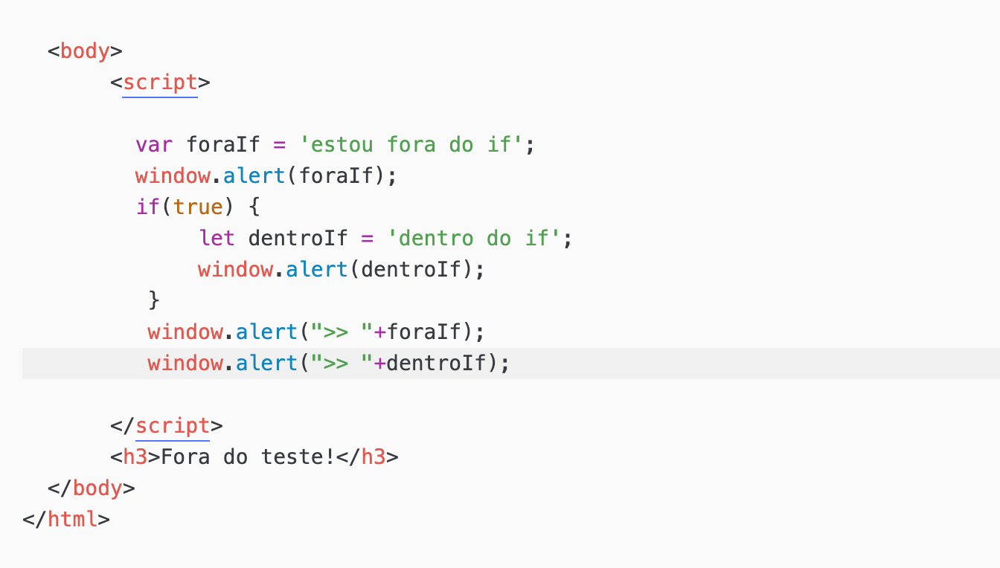
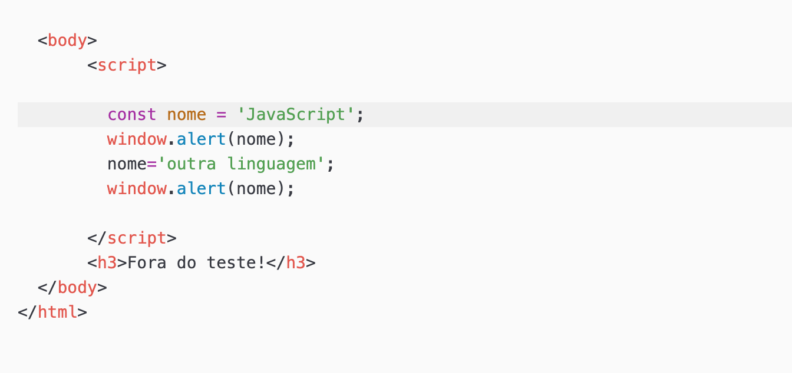
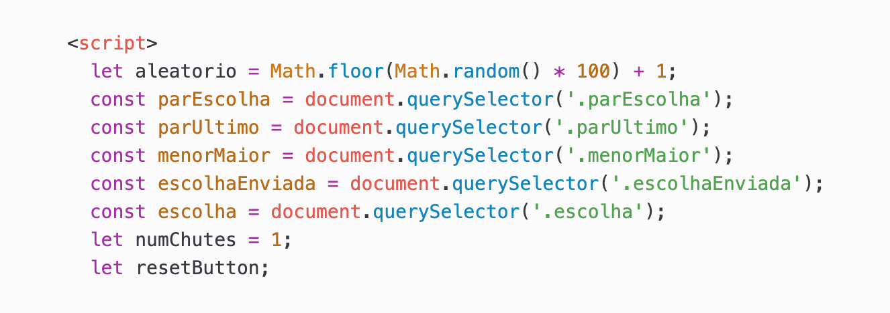
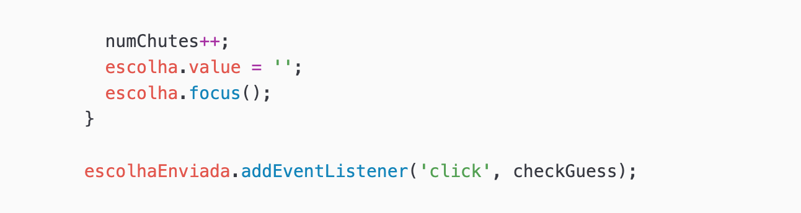

Faremos agora nosso primeiro JS. Será um jogo de adivinhação de um
número aleatório escolhido pelo próprio JS.
Veja abaixo uma imagem da tela deste jogo.
Primeiramente vamos iniciar o jogo criando uma página HTML que suporte o JS. Está página terá o layout básico do jogo, as instruções e um campo para a inserção do número sugerido pelo usuário.
Veja o código HTML aqui.
Na linha 32 iniciamos a criação de um formulário HTML chamado escolha e que irá enviar o número escolhido por meio da variável escolhaEnviada.
Logo abaixo deixamos preparados 3 parágrafos que irão mostrar mensagens ao usuário, que são:
Mostraremos a seguir os principais elementos do JS que implementam esse jogo.
Se estiver apressado, veja o código executável aqui.
Vamos começar nosso estudo de JS pelas variáveis.
O tratamento de escopo de variável em JS é bem diferente de algumas
linguagens convencionais.
Vejamos, por exemplo, o código representado na imagem abaixo:
Vemos, logo no início do código, uma variável (foraIf) com valor atribuído, mas
ainda não declarada. Isso porque JS aplica o conceito de hoisting,
ou seja, toda variável é elevada, içada, (hoisted) até o topo do seu
contexto de execução.
Assim, a execução deste código não apenas permite a declaração após
a definição do valor da variável (o que é um perigo!), mas também,
contrariando a maioria da linguagens de programação, faz variáveis
serem conhecidas fora de seu escopo.
Veja o código fonte aqui.
Para ver o código acima em execução, clique aqui.
Neste tipo de declaração a variável é hoisted, ou seja, é içada para fora de seu escopo. Ainda, a palavra-chave var promove a inicialização da variável com o valor undefined, caso não seja atribuído nenhum outro valor. Notem que esse tipo de declaração, embora seja aplicado o hoisting, tem a garantia de não deixar eventual ruído na variável declarada e não inicializada.
Esse declaração restaura o escopo de bloco à linguagem.
Veja uma imagem parcial do código abaixo:
Na imagem acima reparem no comando de concatenação de strings.
Veja o código fonte aqui. Teste-o! Perceba que o último alert não é mostrado.
Para o código em execução, clique aqui.
Esse declaração garante uma definição única a um identificador, ou seja, este deve ser inicializado no momento da declaração. A palavra chave (const) ainda garante o respeito ao escopo de bloco.
Veja abaixo uma imagem parcial do código:
Veja o código fonte aqui. Teste-o! Perceba que o último alert não é mostrado.
Para o código em execução, clique aqui.
Veja abaixo um trecho com declarações e definições de variáveis e constantes em JS.
Em JS as variáveis são precedidas pela palavra chave let e as constantes por const. A primeira variável corresponde ao número escolhido pelo sistema. Pela função floor percebemos a abordagem de orientação a objetos de JS (classe Math).
Antes de alterar uma página, precisamos acessar o elemento a ser alterado. Isso se faz usando o comando querySelector. Note que são reservados identificadores para os 3 parágrafos mencionados acima, bem como para os valores inseridos na caixa de diálogo. escolhaEnviada é o identificador para o botão.
Esta função tem como núcleo um encadeamento de comandos de seleção
para averiguar se o número escolhido pelo usuário é o mesmo que
o número sorteado pelo sistema.
Veja a imagem abaixo:
Essa função termina atualizando o número de tentativas e voltando o foco, ou melhor, o apontador, para a área de digitação do formulário. Veja imagem abaixo:
A última linha chama o EventListener do formulário.
Continuaremos em breve com as demais particularidades deste script.
Notas de aula baseadas no site da Mozilla